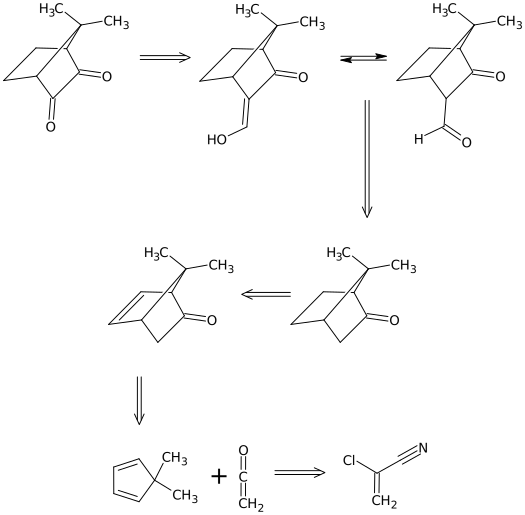
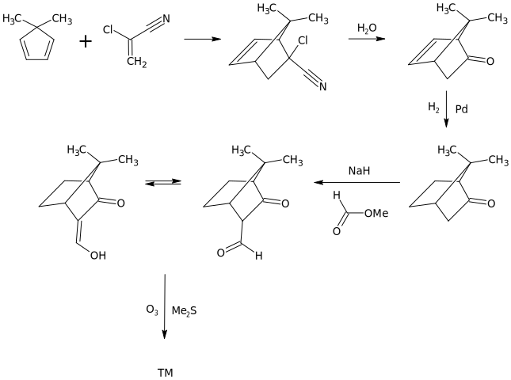

Планирование синтезов
Планирование синтезов Оглавление
Оглавление О проекте
О проектеЛекция 7. 1,2-Ретроны

1.1.
Синтетические эквиваленты синтона
а)
б)
в)
г)
д)
е) Если R = Me
ж) Если R = Me
1.2.
1.3.
1.4.
Синтез
2.1.
2.2.
2.3.
2.4.
2.5.
2.6.
Синтез
2.7.
3.1.
Синтез 1. Анти-гидроксилирование по Прево
Синтез 2
3.2.
Синтез 1. Син-гидроксилирование с наименее затрудненной стороны по Вагнеру
Синтез 2. Син-гидроксилирование с наименее затрудненной стороны по Криге
Синтез 3. Син-гидроксилирование с наиболее затрудненной стороны по Вудворду
3.3.
Синтез 1
Синтез 2
3.4.
Синтез 1
Синтез 2
3.5.
Задачи по теме
Задача 1
Анализ
Синтез
Задача 2
Анализ
Синтез
Задача 3
Анализ

Синтез

Задача 4
Анализ
Синтез
Задача 5
Анализ
Задача 6
Анализ
Синтез
Задача 7
Анализ
Синтез
Задача 8
Анализ
Синтез
Задача 9
Анализ
Синтез
Задача 10
Анализ
Синтез